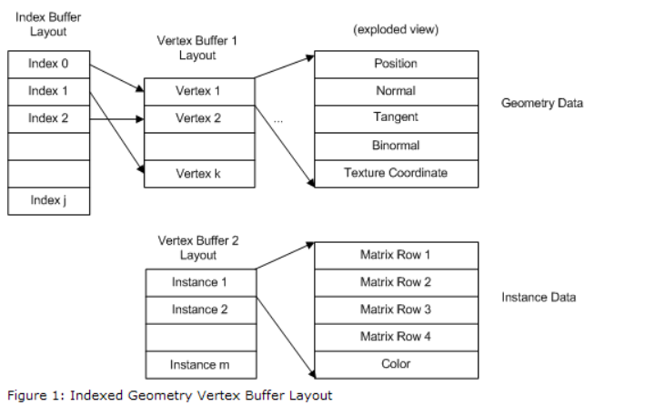

GPU Driven Occlusion Culling Minimal Set
what is the minimal set
{kind=link}
process
ID3D11DeviceContext::DrawIndexedInstancedIndirect 的 instance args作用
typedef struct D3D11_DRAW_INDEXED_INSTANCED_INDIRECT_ARGS {
UINT IndexCountPerInstance;
UINT InstanceCount;
UINT StartIndexLocation;
INT BaseVertexLocation;
UINT StartInstanceLocation;
} D3D11_DRAW_INDEXED_INSTANCED_INDIRECT_ARGS;
感觉StartIndexLocation, BaseVertexLocation 和 StartInstanceLocation 实际的绘制是没用到的, 如果不作为shader resource传入的话
https://docs.microsoft.com/en-us/windows/win32/api/d3d11/nf-d3d11-id3d11devicecontext-drawindexedinstanced https://docs.microsoft.com/en-us/windows/win32/api/d3d11/ns-d3d11-d3d11_draw_indexed_instanced_indirect_args https://docs.microsoft.com/en-us/windows/win32/api/d3d11/nf-d3d11-id3d11devicecontext-drawinstancedindirect
是有用到的，如果把所有物体的vertex buffer 和 index buffer 拍到了一起 定义了vertex buffer 的 各个elment 的stride 之后， 绘制每个instance对应的物体的时候，会根据 StartIndexLocation 和 BaseVertexLocation 来偏移到开始读数据的位置， 偏移是除以了stride之后的个数， 不是字节数。 StartInstanceLocation 是用来对 per instance data进行偏移的, 但一般用constant buffer把参数传进去。 The second buffer is needed only if the input layout that you use has elements that use D3D11_INPUT_PER_INSTANCE_DATA as the input element classification. 
{kind=link}
所以本质上如果所有object的vertex declaration都一样，或者vertex buffer 数据结构强行搞成一样(不存在的字段也占位)，是可以直接用这几个参数就可以绘制的。 但是有些物体可能只有一个uv参数，或者没有骨骼数据，如果强行占位的话，vertex buffer的空间会有点浪费。
这里有几种内存排布方式：
- AOS(array of struct)
vertex的数据按照AOS在内存一个个排列，这样只需要把vertex的layout里每个字段的偏移设置正确，相同vertex declaration的object放到一个draw call. 但这样的问题是如果某个pass只需要position数据全部传入处理就比较麻烦了。
struct Vertex { float3 position; float3 normal; float2 uv; ... } - SOA(struct of array)
vertex的每个element作为一个数组存储，这里也有两种方式：
- 不同object的vertex的相同element的数据分别不连续的存在对应的数组里，但这样multi_draw_indirect没办法操作，因为没办法指定各个物体normals/uvs的起始offset.
vertex1(all_positions, all_normals, all_uvs) | vertex2((all_positions, all_normals, all_uvs)) - 所有object的vertex的相同element的数据都放到一个数组里
这里也有两种方式：vertex1_all_positions, vertex2_all_positions, vertex3_all_positions vertex1_all_nomarls, vertex2_all_normals, vertex3_all_normals- 所有object都使用统一的vertex layout，不存在的数据就占位 虽然会有内存浪费，但是好处就是不用另外做处理，底层可以根据layout和offset获取数据。
- 不同object根据定义用不同的vertex layout 不会有内存浪费，但是每个vertex element的offset和这些element数据需要存在另外的buffer里传进去，manual索引。
- 不同object的vertex的相同element的数据分别不连续的存在对应的数组里，但这样multi_draw_indirect没办法操作，因为没办法指定各个物体normals/uvs的起始offset.
我们采用的方法是 每个vertex element 创建一个单独的 buffer, 把所有物体的对应数据拍在一起，每个物体的每个vertex element记录下对应buffer 的 offset.
DirectX debug device
https://docs.microsoft.com/en-us/windows/win32/api/d3d11sdklayers/nf-d3d11sdklayers-id3d11infoqueue-setbreakonseverity https://walbourn.github.io/dxgi-debug-device/ This snippet ensures that a common but harmless warning message is suppressed in non-Production builds, and enables ‘break on’ functionality in Debug builds if there are any serious corruption/error/warning messages.
ID3D11InfoQueue::SetBreakOnSeverity(D3D11_MESSAGE_SEVERITY_CORRUPTION, true)
ID3D11InfoQueue::SetBreakOnSeverity(D3D11_MESSAGE_SEVERITY_ERROR, true)
ID3D11InfoQueue::SetBreakOnSeverity(D3D11_MESSAGE_SEVERITY_WARNING true)
DirectX api 里的各种offset， OMG
把vertex数据都拍到一起之后，所有相关的buffer offset都要更改。
byte offset https://docs.microsoft.com/en-us/windows/win32/api/d3d11/nf-d3d11-id3d11devicecontext-iasetindexbuffer
void IASetIndexBuffer( ID3D11Buffer *pIndexBuffer, DXGI_FORMAT Format, UINT Offset ); Offset Type: UINT Offset (in bytes) from the start of the index buffer to the first index to use.这里有特别说明是以字节为单位的offset.
- stride divided offset https://docs.microsoft.com/en-us/windows/win32/api/d3d11/nf-d3d11-id3d11devicecontext-drawindexed
void DrawIndexed(
UINT IndexCount,
UINT StartIndexLocation,
INT BaseVertexLocation
);
StartIndexLocation
Type: UINT
The location of the first index read by the GPU from the index buffer.
这里没有特别说明就是以 字节/stride 为步长的offset.
其实我后来想了想，这样做是有他的逻辑在里面的。起始地址用字节，是因为不知道前面的内存里存了啥样的数据，不可能根据stride来。有了起始地址之后，我要索引一整块相同layout数据的某个数据的时候，就可以根据stride divided来了，这样可以根据一些序数来设置比较方便。
buffer里有部分数据是global的，即使关卡切换也只load一次
我们游戏里是有一部分数据是全局的，只load一次，还有一些数据是根据关卡来的，关卡切换就会重新load. 因为全局数据是先加载的，所以可以在buffer设置一个标记offset，标记这之后的数据都是非全局数据。这样如果关卡切换，buffer重置只需要将used标记重置到global的offset就可以，即内存分配从非global的地址开始。
赋值内存的几种方式
- 初始化的时候就给一个Initial data
- mapped锁住数据，再更新
- updateSubResource
兼容之前的方式，同时支持两种pipeline
- 原来vertex buffer里的数据还需要作为shader resource传进去 https://docs.microsoft.com/en-us/windows/win32/api/d3d11/ns-d3d11-d3d11_buffer_desc https://docs.microsoft.com/en-us/windows/win32/api/d3d11/ne-d3d11-d3d11_bind_flag bind flag 需要支持两种
- 每个object的vertex element的byte offset 和 stride divided offset都要记录。
- 如果两种pipeline需要切换的时候，一些buffer需要释放，并且申请新的buffer作为存储。或者以后都统一成一种buffer分配方式。
合成一块buffer之后，buffer的max size要估计好
超过上限，会绘制出另外一种画风，我遇到过超限的时候，那个画面让我想起了权游里的夜鬼-_-
Buffer Manager Design
features
- 有些vertex buffer的字段 有些物体没有
- vertex buffer size一旦allocate，就没办法改变了